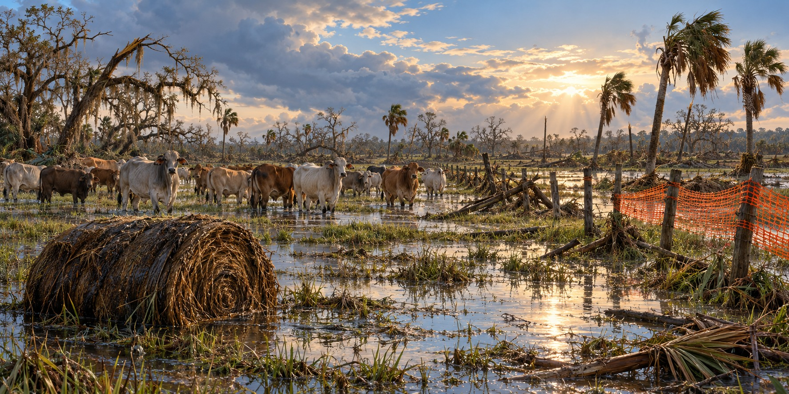

Recovering a Ranch After a Hurricane
What Actually Happens to the Herd, the Fences, and the Family, Long After the Wind Stops

An immediate inspection after a hurricane matters, but it cannot settle every question about a herd’s health. Injury, contaminated feed, prolonged wet conditions and stress can create problems that develop later. Ranchers need both an early assessment and continued observation, with veterinary help for injured or sick animals.
Perimeter First, Always
Extension guidance is specific: restore perimeter fencing before interior fencing, because cattle loose on public roads are an immediate hazard to motorists and neighbors. Only once the perimeter holds should ranchers sort cattle back into their usual groups.
Temporary fencing must be suitable for cattle and the site. Plastic warning mesh is not a dependable substitute for a livestock boundary. An electric system may help in some situations, but its power supply, grounding and the animals’ familiarity with it affect whether it provides secure containment.
The Sickness That Waits
Wet, damaged pasture and disrupted feeding can increase animal-health risks. Signs such as lameness, poor appetite, breathing difficulty or unusual behavior require attention. A veterinarian can help assess disease, injuries and an appropriate treatment or vaccination plan rather than assuming that every post-flood illness has the same cause.
Daily observation should continue as cattle return to ordinary pasture. Safe water and suitable feed matter as much as repaired fences. A herd can look intact while access to grazing or stored hay has changed sharply.
Flood-Damaged Hay
Flood-damaged hay can contain contaminants and develop mold. UF/IFAS cautions against feeding moldy hay and recommends assessing quality and safety with appropriate expertise. Peeling off the wet outside does not establish that the rest is safe. Damage cannot be judged by a universal rule of one foot of water for one day.
Decisions About the Herd
Feed shortages may require changes in herd management, including discussions about early weaning or reducing numbers. Those decisions should account for animal condition and welfare, veterinary advice and the ranch’s ability to provide care. A severely injured animal is not simply a market opportunity.
Documenting Losses and Seeking Help
The Livestock Indemnity Program can assist with eligible livestock deaths, and the Emergency Conservation Program may support eligible repairs. Producers should contact their local USDA Service Center for current requirements, deadlines and cost-share terms. Dated photographs, inventories and repair records help connect a claim to the actual loss.
A Slow Climb, Not a Stampede
Rebuilding can take several seasons. The cost of new fencing and purchased feed arrives while ordinary income may be disrupted. Families must weigh the work ahead, the condition of the land and herd and the resources available to continue. Recovery is a sequence of decisions, not one return to normal.
Quick Facts
| First priority | Perimeter fencing; loose cattle on roads are a public hazard |
|---|---|
| Delayed diseases | Continued observation and veterinary assessment may be needed |
| Flooded hay rule | Contamination and mold require assessment; no universal depth-and-duration rule |
| Temporary fencing | Use cattle-appropriate containment; warning mesh is insufficient |
| Livestock Indemnity Program | Check current eligibility, documentation and deadlines with USDA |
Did You Know?
Disease from a flood can take weeks to show up in cattle.
Vocabulary
Perimeter fence: the outer boundary fence that keeps livestock on the property.
Polywire: lightweight electric fencing wire that can be installed quickly.
Culling: removing animals from a herd, usually because of poor condition or low value.
Discussion Questions
1. Why is a single post-storm inspection not enough for a herd?
2. How might limited feed and damaged fences change decisions about a herd?
Related Articles
FLH-0022 — Surviving a Storm in a Cracker Cabin
FLH-0024 — The Day the Wind Took the Barn
FLH-0036 — Hurricanes and the Florida Cattle Industry
FLH-0038 — Farming After the Flood
Sources
Mississippi State University Extension Service. “Hurricane Preparedness and Recovery for Beef Cattle Operations.” extension.msstate.edu
NC State Extension. “Dealing With Pasture, Hay, Feed and Animal Health Issues During Hurricane Helene Recovery.” ncdisaster.ces.ncsu.edu
UF/IFAS Extension. “Hurricane Preparedness for Forage Crops in the Southeast United States.” ask.ifas.ufl.edu
Farmers.gov. “Protection and Recovery Programs and Resources.” farmers.gov
UF/IFAS — Hurricane preparedness and forage recovery
USDA — Livestock Indemnity Program